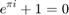

clear all close all clc NUM_SAMPLES = 100000; LINE_WIDTH = 2.0; MARKER_SIZE = 16; BALLOON_ALTITUDE = 35000; MAX_K = 15; [Temperature_air, ~, Pressure_air, rho_air] = atmoscoesa(BALLOON_ALTITUDE); rho_H2 = (Pressure_air) / ( 4124 * Temperature_air ); rho_mat = 920; pressure_gauge = 10; sigma_u = 22900000; r_vec = zeros(1, NUM_SAMPLES); t_vec = zeros(1, NUM_SAMPLES); mass_balloon = zeros(1, NUM_SAMPLES); k = linspace(1, 20, NUM_SAMPLES); for i = 1:NUM_SAMPLES r_vec(i) = nthroot( (500 / ( (4/3) * pi )) / ( rho_air - ( ( 3 * pressure_gauge * k(i) ) / (2 * sigma_u) ) * rho_mat - rho_H2 ), 3 ); t_vec(i) = ( k(i) * pressure_gauge * r_vec(i) ) / (2 * sigma_u); mass_balloon(i) = (4 * pi * r_vec(i)^2) * t_vec(i) * rho_mat; if t_vec(i) > 30.80e-06 && t_vec(i) < 30.81e-06 k_index = i; end if k(i) > 12 && k(i) < 12.001 k2_index = i; end end r_value = r_vec( k_index ); r2_value = r_vec( k2_index ); vol_balloon = (4/3) * pi * r_value^3; mass_val = mass_balloon(k_index); mass2_val = mass_balloon(k2_index); t_value = t_vec(k_index); t2_value = t_vec(k2_index); fprintf('Radius (m): %.5f\n', r_value); fprintf('K Safety: %.5f\n', k(k_index)); fprintf('Mass (kg): %.5f\n', mass_val); fprintf('Thickness (m): %.5e\n', t_value); fprintf('Volume (m^3): %0.5e\n\n', vol_balloon) fprintf('Radius 2 (m): %.5f\n', r2_value); fprintf('K_2 Safety: %.5f\n', k(k2_index)); fprintf('Mass 2 (kg): %.5f\n', mass2_val); fprintf('Thickness 2 (m): %.5e\n', t2_value); legendString = cell(2, 1); legendString{1, 1} = sprintf('k = %0.3f, radius = %0.3f (m), mass = %0.3f (kg)', k(k_index), r_vec(k_index), mass_val); legendString{2, 1} = sprintf('k = %0.3f, radius = %0.3f (m), mass = %0.3f (kg)', k(k2_index), r_vec(k2_index), mass2_val); hold on set(gca,'FontSize', 22) plot(k(k_index), r_value, 'd', 'MarkerSize', MARKER_SIZE, 'LineWidth', LINE_WIDTH) plot(k(k2_index), r2_value, 'd', 'MarkerSize', MARKER_SIZE, 'LineWidth', LINE_WIDTH) legend(legendString) plot(k, r_vec, '-', 'LineWidth', LINE_WIDTH) ylim([0, 150]) xlim([1, MAX_K]) xlabel('k') ylabel('Balloon Radius (m)') title('Balloon Radius vs. k') hold off figure hold on set(gca,'FontSize', 22) plot( r_value, k(k_index), 'd', 'MarkerSize', MARKER_SIZE, 'LineWidth', LINE_WIDTH) plot( r2_value, k2(k2_index), 'd', 'MarkerSize', MARKER_SIZE, 'LineWidth', LINE_WIDTH)
Radius (m): 29.30944 K Safety: 4.81448 Mass (kg): 305.98758 Thickness (m): 3.08100e-05 Volume (m^3): 1.05466e+05 Radius 2 (m): 66.26741 K_2 Safety: 12.00092 Mass 2 (kg): 8815.49645 Thickness 2 (m): 1.73640e-04
Undefined function 'k2' for input arguments of type 'double'. Error in calculate_r (line 87) plot( r2_value, k2(k2_index), 'd', 'MarkerSize', MARKER_SIZE, 'LineWidth', LINE_WIDTH)

legend(legendString) plot(r_vec, k, '-b', 'LineWidth', LINE_WIDTH) xlim([0, 150]) ylim([1, MAX_K]) xlabel('Balloon Radius') ylabel('k') title('k vs. Balloon Radius') hold off figure hold on plot(k, mass_balloon, '-g', 'LineWidth', LINE_WIDTH) xlim([1, MAX_K]) ylim([1, 1000]) xlabel('k') ylabel('Mass of Balloon (kg)') title('Mass of Balloon vs. k') hold off hold off